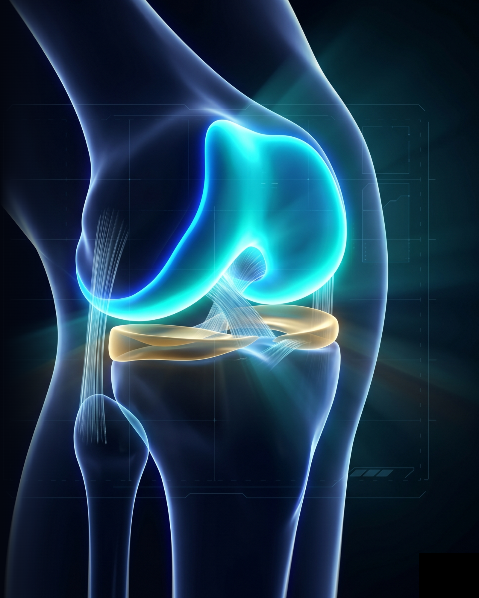
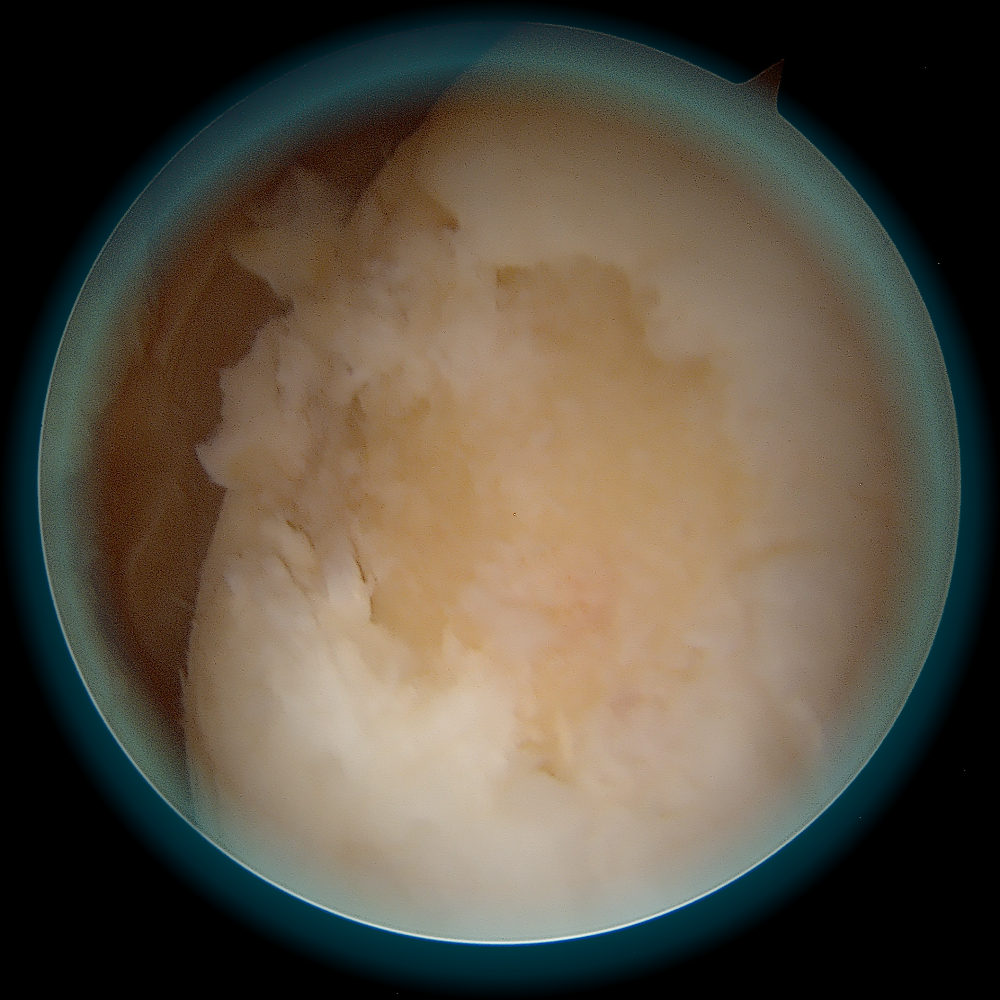
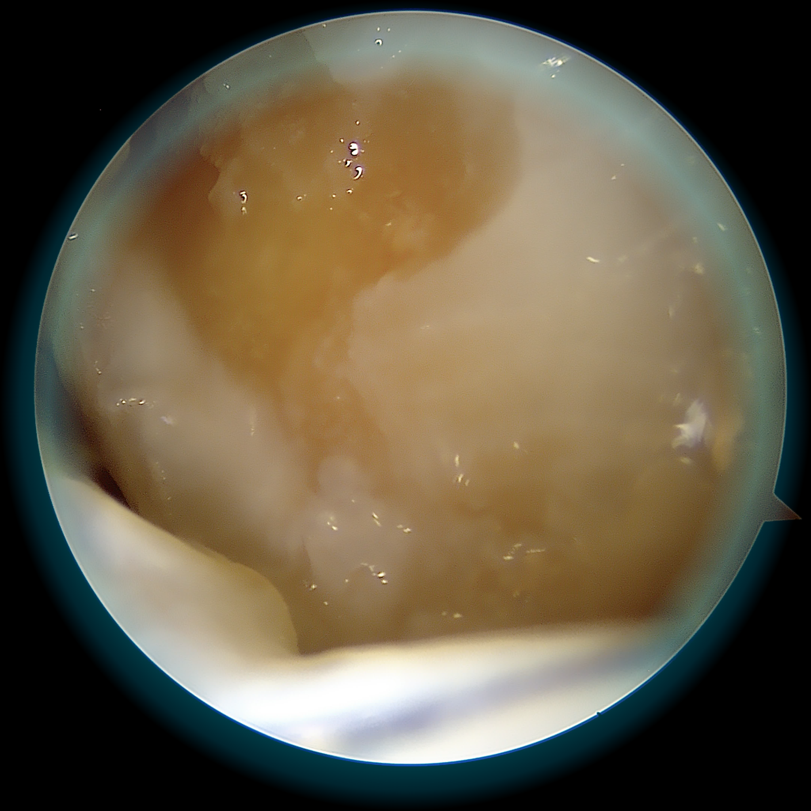
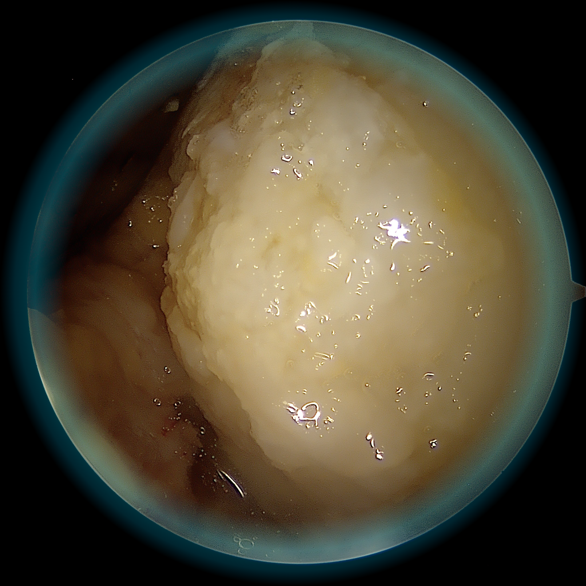
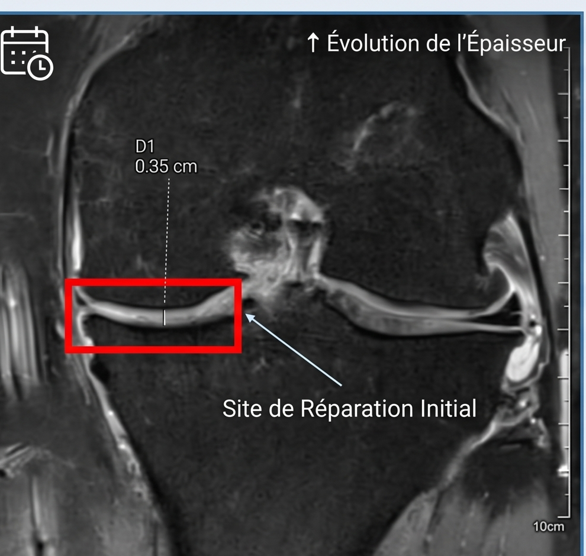
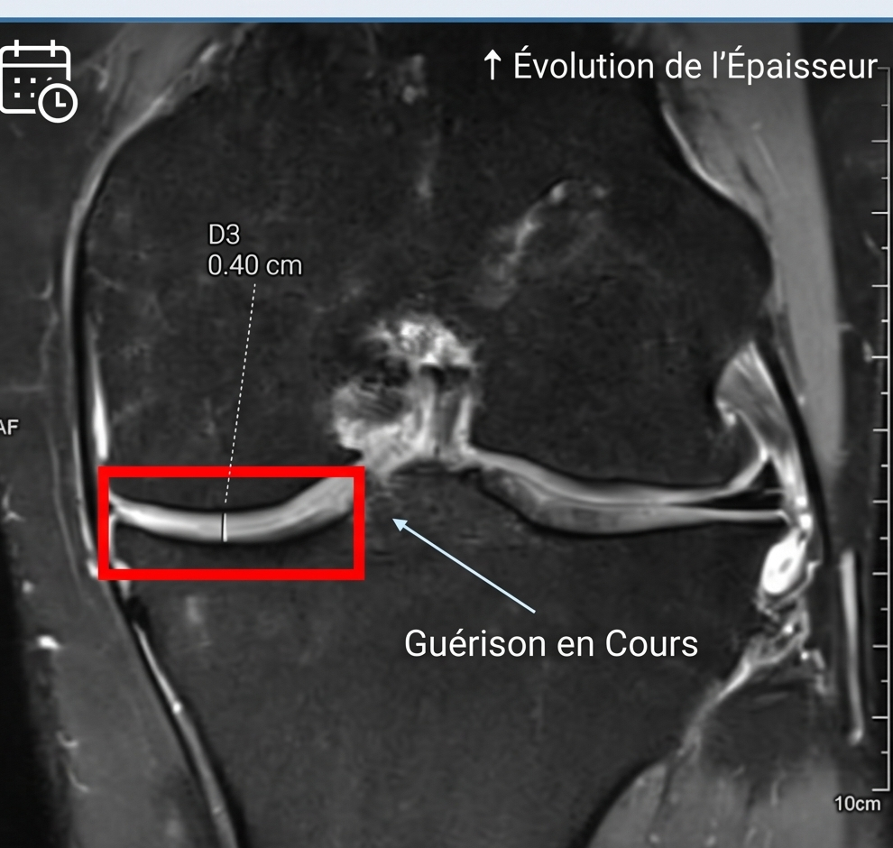
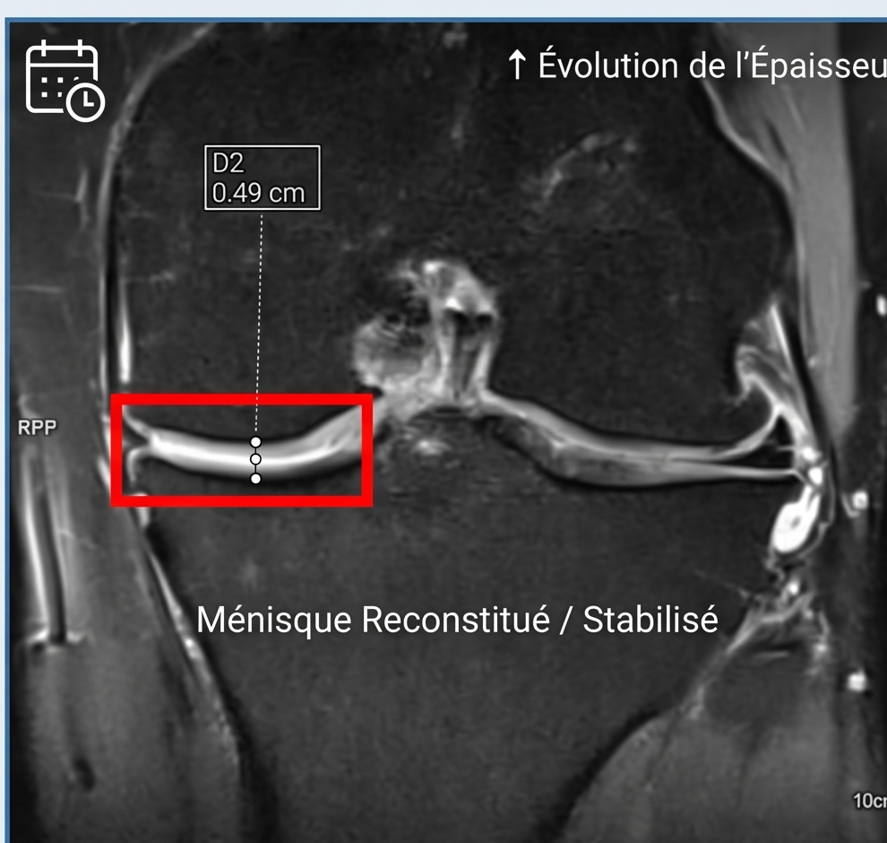

Cartilage graft for the knee and ankle
An autologous single-stage procedure — your own cartilage to repair your cartilage.
Persistent knee or ankle pain warrants an assessment. For some localised cartilage lesions, an autologous cartilage graft may be discussed after examination and imaging.

Cartilage does not repair itself
Cartilage is an unusual tissue: it is avascular, meaning it receives no blood supply. Without blood vessels, it cannot regenerate spontaneously the way bone or muscle does. Once damaged — by trauma, osteochondritis, or localised wear — cartilage stays injured, and pain becomes chronic.
Cartilage is like the Teflon coating on a pan: once scratched, it does not repair itself. You have to intervene.

Different options to discuss in consultation
Injections
Microfracture
Joint replacement
Chondrocyte transplantation (MACI / ACI)
Autologous cartilage graft: an option for selected lesions
The AutoCart™ technique uses the patient’s own cartilage.
The technique uses cartilage fragments from the patient. Its suitability, practical details and possible associated procedures are explained during the consultation.
Minced chondrocytes
PRP — Platelet-Rich Plasma
Autologous fibrin glue
These three elements combined trigger the regeneration of hyaline cartilage — the real cartilage, strong and long-lasting.
Step by step — six stages, a single procedure
Visualisation of the lesion under arthroscopy
The lesion is assessed under arthroscopic guidance.
Debridement and harvest of your healthy cartilage
Cartilage fragments are collected and the area to be treated is prepared.
Activation of your platelet-rich plasma
Blood is processed to prepare platelet-rich plasma (PRP).
Placement of the graft — the lesion is filled
The cartilage fragments are placed in the prepared defect.
Graft stabilisation
The graft is stabilised according to the planned technique.
Final check
The treated area is checked. Healing and recovery are assessed over time.


Is this technique right for you?
✓ Indicated for
- Chondral or osteochondral lesions grade 3 to 4 (Outerbridge)
- Lesion size, depth and location assessed individually
- Knee: femoral condyle, tibial plateau, patella
- Ankle: talar dome (osteochondral lesion)
- Active patient wishing to preserve a native joint
- Failure of conservative treatments (injections, physiotherapy)
- Failure or insufficient result of microfractures
✗ Not indicated if
- Diffuse joint osteoarthritis
- Uncontrolled ligament injury
- Unstable meniscal lesion not controlled
- Significantly deviated mechanical axis not corrected
A specialist consultation is required to assess your situation on the basis of the clinical examination and imaging (MRI in particular).
After surgery: what to expect
A personalised recovery plan
The location of the lesion and any associated procedures determine the recovery plan. This page is not a prescription.
Goals, follow-up and limitations
Results must be interpreted in the context of each patient.
Patient information: cartilage restoration (AAOS, English)
Goals
Discuss pain, function and your activity goals.
Individual outcomes
Improvement varies; a particular result cannot be guaranteed.
Follow-up
Recovery is assessed during follow-up visits, with imaging when indicated.
Risks and limitations
Persistent pain, stiffness, infection, thrombosis or failure of the graft may occur. Further surgery may be needed. Discuss your individual risks in consultation.



Frequently asked questions
Pain relief is prescribed and adapted to your situation.
The planned duration and type of hospital stay are explained during the preoperative consultation and depend on the procedures involved.
Weight-bearing and return to sport require individual instructions. Follow your prescription and ask the surgical team before changing your activity.
Coverage and any additional fees are explained before surgery.
The option is assessed according to the location and characteristics of the lesion. A consultation is needed to establish the indication.
Bring your available imaging and reports. Any further examinations will be specified during the consultation.
Persistent knee or ankle pain that will not go away?
A dedicated consultation allows us to analyse your imaging, assess your lesion, and determine whether cartilage grafting is the right solution for your situation. Every case is unique — let us start with a meeting.